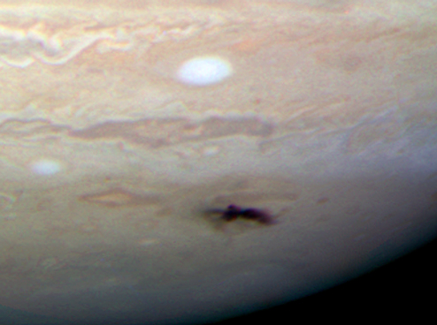

Alături de Soare, influența gravitațională a lui Jupiter a ajutat la modelarea Sistemului Solar. Orbitele majorității planetelor sistemului se află mai aproape de planul orbital al lui Jupiter decât de planul ecuatorial al Soarelui (Mercur este singura planetă care este mai aproape de ecuatorul Soarelui în înclinarea orbitală), Golurile Kirkwood din centura de asteroizi sunt cauzate în mare parte de Jupiter, iar planeta ar fi putut fi responsabilă de Marele bombardament târziu din istoria Sistemului Solar interior.
Aceștia sunt cunoscuți sub numele de asteroizi troieni și sunt împărțiți în „tabere” grecești și troiene pentru a comemora Iliada. Primul dintre aceștia, 588 Ahile, a fost descoperit de Max Wolf în 1906; de atunci au fost descoperite peste două mii. Cel mai mare este 624 Hector. Alături de sateliții săi, câmpul gravitațional al lui Jupiter controlează numeroși asteroizi care s-au instalat în regiunile Punctelor Lagrange și care urmează pe Jupiter pe orbita sa din jurul Soarelui.
Majoritatea cometelor de scurtă durată aparțin familiei Jupiter - definite drept comete cu axe semimajore mai mici decât cele ale lui Jupiter. Cometele familiei Jupiter se consideră că se formează în centura Kuiper în afara orbitei planetei Neptun. În timpul întâlnirilor strânse cu Jupiter orbitele lor sunt perturbate ceea ce a scurtat perioada lor de circulație iar apoi datorită interacțiunii gravitaționale regulate cu Soarele și Jupiter, orbitele au devenit mai circulare.
Datorită magnitudinii masei lui Jupiter, centrul de greutate dintre acesta și Soare se află chiar deasupra suprafeței Soarelui. Jupiter este singurul corp din Sistemul Solar pentru care acest lucru este adevărat.
Coliziuni
Jupiter a fost numit aspirator al Sistemului Solar, datorită imensei sale gravitații și a amplasării în apropierea Sistemului Solar interior. S-a crezut că planeta servea pentru a proteja parțial sistemul interior de bombardamentele cometare. Totuși, simulări pe calculator din 2008 sugerează că Jupiter nu provoacă o scădere netă a numărului de comete care trec prin Sistemul Solar interior, deoarece gravitația sa perturbă orbitele lor spre sistemul interior, de câte ori le accelerează sau le evacuează. Acesta primește cele mai frecvente impacturi cu comete și asteroizi. Acest subiect rămâne controversat în rândul oamenilor de știință, deoarece unii consideră că trimite comete din centura Kuiper către Pământ în timp ce alții cred că Jupiter protejează Pământul de presupusul nor Oort. Jupiter experimentează de aproximativ 200 de ori mai multe impacte cu asteroizi și comete decât Pământul.
Un studiu din 1997 asupra desenelor astronomice timpurii sugerează că Giovanni Cassini ar fi putut înregistra urmele impactului unei comete asupra lui Jupiter încă din 1690. Inițial, studiul conținea alte opt observații ca fiind potențiale de impact, pe care Cassini și alții le-au înregistrat între 1664 și 1839, însă ulterior s-a stabilit că probabilitatea ca acesta să fie de la un impact este scăzută sau zero.
Printre descoperirile mai recente se numără următoarele:
- O minge de foc a fost fotografiată de Voyager 1 în timpul întâlnirii sale cu Jupiter din martie 1979.
- În perioada 16 iulie 1994 - 22 iulie 1994, peste 20 de fragmente din cometa Shoemaker–Levy 9 s-au ciocnit cu emisfera sudică a lui Jupiter, oferind prima observare directă a unei coliziuni între două obiecte ale Sistemului Solar. Acest impact a furnizat date utile despre compoziția atmosferei lui Jupiter.
- Observațiile în infraroșu au indicat un punct luminos unde a avut loc impactul, ceea ce înseamnă că impactul a încălzit atmosfera inferioară din regiunea polului. Impactul a lăsat o urmă sub forma unei pete negre în atmosfera planetei, similar ca dimensiune cu Oval BA. Urmele de coliziune au dispărut mai repede decât impactul cometei din 1994, deoarece - așa cum au arătat observațiile ultraviolete - impactul nu a creat particule fine de praf. Analizele orbitelor posibile ale corpului responsabil de coliziune sugerează că a fost un asteroid din Familia Hilda sau un obiect cu o orbită similară centaurului 2005 TS 100 cu un diametru de 200-500 m.
- La 3 iunie 2010, un astronom amator din Australia a detectat o minge de foc, mai mică decât impactul observat anterior (1979). Ulterior, s-a descoperit că evenimentul a fost capturat în videoclip de un alt astronom amator din Filipine.
- O altă minge de foc a fost văzută la 20 august 2010.
- La 10 septembrie 2012, a fost detectată o altă minge de foc.
- La 17 martie 2016, un asteroid sau o cometă a lovit Jupiter și evenimentul a fost filmat.